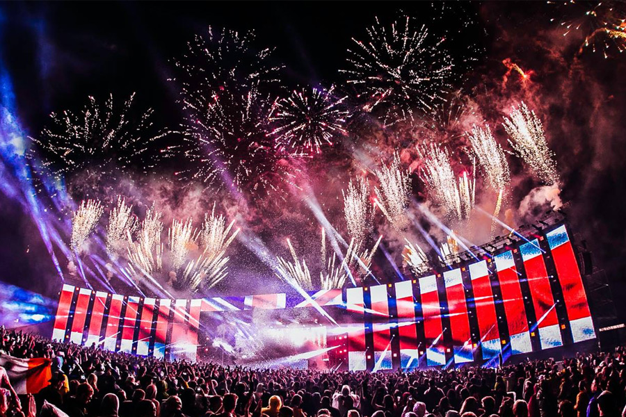

Festivals
There are a lot of dance festivals around Europe. I found this website that is highly ranked and is recommending each year the top 10 to try and go to. So here are the ones, still not closed because of the pandemic that we experience at the moment, and recommended by them. Each of them have a link at the end of the description that would bring you to a guide about the said festival. To go to the website click this link.
Tomorrowland
This festival will take place in Belgium on two consecutive weekend in July. 17-19 July and 24-26 July. It is said that it was run year by year for more than a decade. That says it all, I think.
Tomorrowland 2019 Festival Guide
Ultra Europe
It's one of the most famous electronic dance music festival that is held in Eastern Europe. In Croatia more exactly. It's not an expensive one and easily accessible by anyone. so if you want a hyper weekend on a budget definitely check out this festival that will take place at the weekend of 10-12 July.
Ultra Europe 2020 Festival Guide & Mailing List
Creamfields
This is one of the more expensive, but definitely worth it festivals. It is held in Britain and is always attended by big stars.
Creamfields 2019 Festival Guide
Untold Festival
It won the Best Major Festival award in 2015. This is a newer festival but proved to be a success already. it is held in Romania between 6-9 August.
Untold Festival 2020 Guide & Waiting List
Mysteryland
Festival in the Netherlands?! You know it's going to be good. So head over to the website and clear your calendar for 28-30 August, and replace it with "party time"
Mysteryland 2020 Festival Guide & Waiting List
Airbeat One Festival
Full of laser light, pyrotechnics and famous bands, the Airbeat One is definitely highly ranked by the festival goers. This take's place in Germany between 8-12 July.
Airbeat One Festival 2020 Guide
Balaton Sound
I've attended many times this festival myself as it is in my home country. The Balaton Sound holds a special place in my heart and I highly recommended personally. This is Zamárdi, Hungary between 8-12 July.
Balaton Sound 2020 Festival Guide & Waiting List
BBF: Barcelona Beach Festival
This is held on the beach of Platja del Forum in Barcelona. You know is going to be magical when it's held on the beach. When is it happening you ask? Well it's 13 July.
BBF: Barcelona Beach Festival 2020 Guide & Waiting List
Electric Love Festival
It's in the name... If you have a partner, you will fall in love again, if you don't you going to meet them at the festival. It's in Austria between 9-12 July.
Electric Love Festival 2020 Guide & Waiting List
AMF: Amsterdam Music Festival
It’s one of the very few festivals that is still attended by Tiesto. If you don't know who he is, you are definitely on the wrong website. It's in Amsterdam and it takes place on the 19th of October.